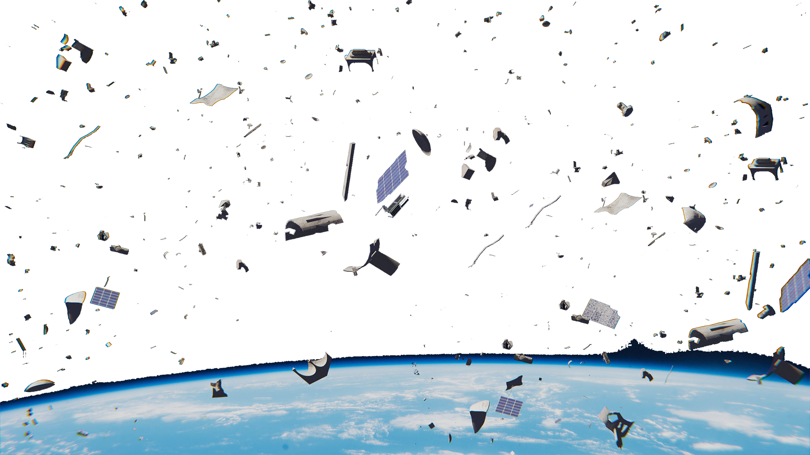
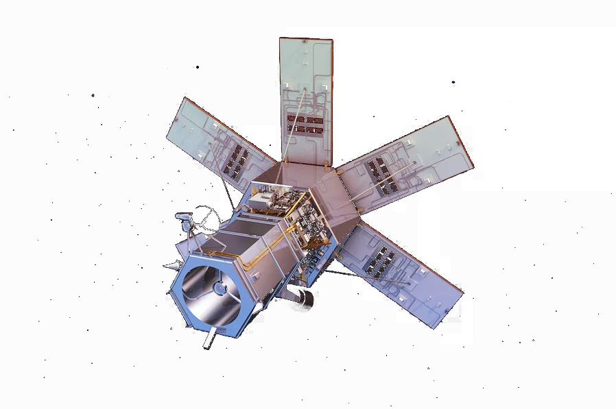

Space Debris &
Decades of space travel have resulted in a large amount of space debris that can be harmful to today’s satellites. Aerospace is addressing the issue of space debris and space traffic management by developing tools for analyzing potential collisions, studying reentry breakups, and modeling debris objects in space.
The launch of Sputnik on Oct. 4, 1957, marked the beginning of an intense space race that led to decades of rocket and satellite launches, which eventually resulted in a large amount of space debris. Space debris is anything in orbit that is man-made and is no longer in use. It consists of old, inactive satellites; rocket stages; and other discarded hardware. Smaller pieces of space debris include fragments of vehicles that exploded or collided and bits of insulation and paint that have come off of space vehicles. Generally, the smaller the debris, the more there is of it. This abundance of debris created the need for a military space surveillance to maintain a catalog of all Earth-orbiting objects — active payloads, satellites and debris — along with detailed information about trajectory and point of origin.
This “space object catalog” or Satellite Catalog (SATCAT) is maintained by Joint Combined Space Operations Center (CSpOC) at Vandenberg Air Force Base, part of U.S. Strategic Command. One of the missions of CSpOC is to detect, track and identify all objects in Earth orbit in addition to monitoring the International Space Station (ISS) and other NASA satellites for collisions. Also located at Vandenberg Air Force Base is the The U.S. Air Force’s 18th Space Control Squadron, which operates the Space Surveillance Network (SSN), which oversees radar and optical sensors at various sites around the world. These sensors observe and track objects that are larger than a softball in low Earth orbit (LEO) and basketball-sized objects or larger, in higher, geosynchronous orbits. The sensors can determine which orbit the objects are in, and that information is used to predict close approaches, reentries and the probability of a collision.
As a world leader in space debris research, The Aerospace Corporation (Aerospace) has supported the Space Surveillance Network for nearly 60 years. Aerospace helps the U.S. government estimate the amount of debris created in a collision or explosion, assists with reentry predictions and reentry casualty expectation and is renowned in space traffic management research.
The Problem of Space Debris
Space debris affects everyone especially since almost everything we do in our modern way of life uses satellite technology. Space debris adds to the cost of operating satellites because if debris destroys a satellite, it may take years and hundreds of millions of dollars to restore that satellite's service. Even tiny debris objects can inflict grave harm to critical sensors and spacecraft components. A one-centimeter-sized object is considered lethal if it hits a satellite and an object down to one millimeter can critically damage a satellite if it hits a critical component. In addition, the growth in space debris will make orbit operations and space flight more hazardous, difficult and more costly if frequent maneuvers are required to avoid debris. A satellite would have to carry extra fuel for these extra maneuvers and would likely need to shield critical areas from collisions with small debris.
Once a pressure sphere on the upper stage of a rocket; now a piece of space debris recovered in South Africa. Photo: Argus/Enver
The U.S. military is currently tracking about 20,000 objects and has cataloged more than 40,000 objects over the years. Space debris numbers are estimated to rise to over 100,000 objects in the coming years. Most space debris objects are too small to be tracked but large enough to damage spacecraft. It is estimated that there are hundreds of thousands of objects that could be fatal or catastrophic to a space mission and millions of objects that are capable of causing damage.